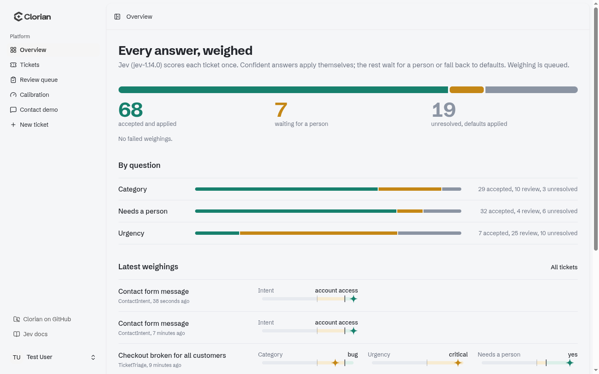
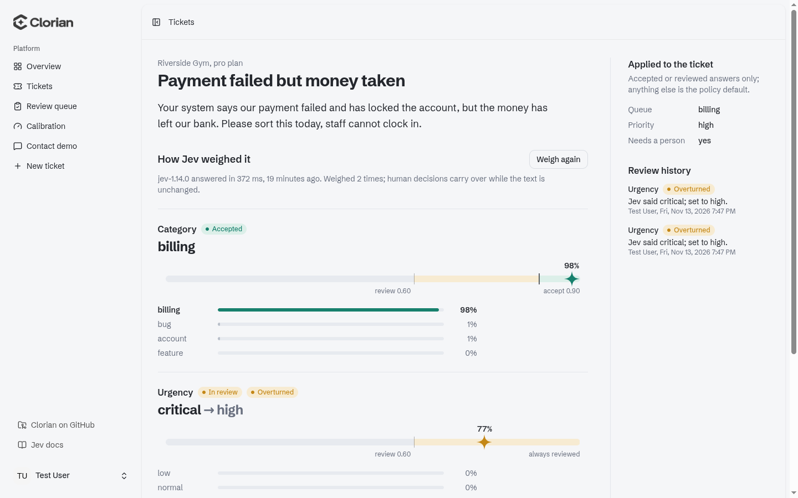

Clorian is Welsh for scales.
Let Jev make the obvious calls.
Turn free text into decisions your app can act on: which team, how urgent, which category, spam or not, does a manager need to see it. Clorian asks Jev, applies the answers it is sure of, sends the rest to a person, and learns from every review when to trust it more.
composer require phoenix1331/laravel-clorian
PHP 8.3+, Laravel 12 or 13. Headless: bring your own UI.
Why Clorian
Plenty of decisions in an app come down to reading some text: a ticket, a listing, a review, a claim. A model can read it, but some of its answers will be wrong. Clorian puts a threshold on every answer and records what people decide, so automation grows with the evidence instead of on faith.
Accepted
Jev is at or above the accept threshold. Your policy's apply() acts on it straight away.
Review
Sure enough to suggest, not to act. The default holds until a person upholds, overturns or marks it missed.
Unresolved
Below the review threshold. The default applies, and the answer is still recorded for the stats.
- One call per weighing. Every question in a policy is answered together, with a probability for every option.
- Thresholds per question and per option. Auto-accepting "critical" wakes someone up, so it can always go to a person while "low" accepts sooner.
- Calibration from real reviews.
clorian:statsshows how often people agreed with Jev at each confidence, and suggests where the threshold can move. - Private by default. Personal data is redacted before anything leaves your app, and stored input is encrypted.
Use cases
Anything your app saves as text can be weighed. A policy asks the questions; these are a few of the shapes it takes.
Support tickets
Route to the right team, set urgency, and make sure "critical" is always confirmed by a person.
Question::choice('team', ['billing', 'bug', 'account']),
Question::choice('urgency', ['low', 'high', 'critical'])
->option('critical', fn ($o) => $o->alwaysReview()),Marketplace listings
Put listings in the right category, and hold anything that might be prohibited for a person.
Question::choice('category', [
'electronics', 'home', 'fashion',
]),
Question::boolean('prohibited')->alwaysReview(),Reviews and comments
Hide spam, mark off-topic posts, and pull out what the customer is actually unhappy about.
Question::boolean('spam')->accept(0.95),
Question::choice('complaint', [
'delivery', 'quality', 'price', 'none',
]),Refunds and claims
Approve the routine ones automatically and send the unusual ones to a manager.
Question::choice('reason', [
'damaged', 'late', 'changed_mind',
]),
Question::boolean('needs_manager')->accept(0.80),Contact forms and leads
Answered while the visitor waits with Clorian::now(): send sales to sales, password problems to the help page, spam to nowhere.
Question::choice('intent', [
'sales', 'support', 'account_access', 'spam',
]),Content tagging
Tag posts, documents or products by topic and audience, so search and feeds stay tidy without manual sorting.
Question::choice('topic', [
'security', 'billing', 'release',
]),
Question::choice('audience', ['beginner', 'advanced']),For decisions about people, such as access to a service, keep a person in the loop: alwaysReview() on the question means Clorian suggests and a human decides.
How it works
Mark a model, write a policy, and Clorian takes it from there. The flow is the same for any model; here it is with a support ticket:
- The ticket is saved. The
HasWeighingstrait has already registered Clorian's model listener, so there is nothing to wire up. - Clorian queues a job once the save commits. In sync mode it weighs during the save instead.
- The
#[Weigh]fields are redacted and sent to Jev with every question in your policy, in one call. - Jev returns a probability for every option. Say billing 0.98, normal urgency 0.71, needs a person 0.95.
- Each answer is checked against its thresholds. Billing is accepted (above 0.90), the urgency goes to a person (between 0.60 and 0.90), needs a person is accepted.
- Your policy's
apply()runs with the accepted answers and your defaults for the rest: the ticket moves to the billing queue, and its priority stays normal until someone confirms it. - Events fire:
AnswerAcceptedtwice andAnswerNeedsReviewonce, for any listeners you have. - A person reviews the urgency and changes it to high.
apply()runs again with their decision. - Over time,
clorian:statsshows how often people agreed with Jev at each confidence, andclorian:tunelets Jev decide more once the evidence is there.
Where your code goes
| You want to | Write | Who calls it |
|---|---|---|
| Weigh a model when it is saved | #[Weigh(...)] and use HasWeighings | Clorian, on every create and on changes to those fields |
| Change the model from the answers (queue, priority, flags) | Your policy's apply() | Clorian, after every weighing and every review |
| Notify, page someone, send a reply | An event listener | Laravel, when Clorian fires the event. Optional: write one only if you need it |
| Decide about data with no model (a contact form, an API call) | Clorian::now() | You, where the data arrives |
| Let people review answers | Your own screen, calling Clorian::review() | You. Clorian is headless: it records decisions, you show them |
Keep apply() repeatable
apply() runs after the first weighing, again after every review, and again on weighNow() and clorian:rescan. Make it set values (a queue, a priority) so running it twice changes nothing. Put anything that must happen once, such as an email, in a listener instead.
React with a listener
A plain Laravel listener; Laravel finds it in app/Listeners by the type-hinted event. Events fire after the save commits and carry ids and values, never the content. "Critical" always goes to a person in the policy below, so this pages someone to look straight away:
namespace App\Listeners;
use App\Clorian\TicketTriage;
use App\Models\Ticket;
use App\Notifications\CriticalTicketWaiting;
use Illuminate\Support\Facades\Notification;
use Phoenix1331\Clorian\Events\AnswerNeedsReview;
class PageOnCallForCriticalTickets
{
public function handle(AnswerNeedsReview $event): void
{
if ($event->policy !== TicketTriage::class || $event->question !== 'urgency' || $event->value !== 'critical') {
return;
}
Notification::route('mail', 'oncall@example.com')
->notify(new CriticalTicketWaiting(Ticket::find($event->subjectId)));
}
}List what needs reviewing
use Phoenix1331\Clorian\Resolution\Status;
$tickets = Ticket::pendingReview()->with('latestWeighing.answers')->get();
foreach ($tickets as $ticket) {
foreach ($ticket->latestWeighing->answers as $answer) {
if ($answer->status === Status::Review && ! $answer->isReviewed()) {
// Show $answer->question, $answer->value and $answer->confidence,
// with buttons that call Clorian::review($answer, ...)
}
}
}In queued mode, weighing happens on your queue, so run a worker (php artisan queue:work) as you would for any queued job. Until it runs, the model keeps its defaults.
Quick start
composer require phoenix1331/laravel-clorian
php artisan clorian:install # publishes config and migrations, asks queued or sync, runs migrate
php artisan clorian:ping # checks your key with one sample callAdd your key to .env, and pin the model to the version clorian:ping reports, so confidences stay comparable:
JEV_API_KEY=... # your TypeSafe API key
JEV_MODEL=jev-1.14.0 # pin the version clorian:ping reports
CLORIAN_DRIVER=jev # jev, or fake to work offline
CLORIAN_MODE=queued # queued (in a job after the save) or sync (during the save)
CLORIAN_STORE_INPUT=subjectless # none, subjectless or alwaysMark a model with the policy that weighs it and the fields to send. It is weighed when created, and again when one of those fields changes:
use Phoenix1331\Clorian\Attributes\Weigh;
use Phoenix1331\Clorian\Concerns\HasWeighings;
#[Weigh(TicketTriage::class, fields: ['subject', 'body'])]
class Ticket extends Model
{
use HasWeighings;
}Or weigh anything on demand, while the visitor waits. Sync calls time out after 2 seconds and fall back to the defaults, so nobody is kept waiting:
use Phoenix1331\Clorian\Facades\Clorian;
$weighing = Clorian::now(ContactIntent::class, $request->message);
if ($weighing->accepted('intent', 'account_access')) {
return redirect()->route('help.password');
}Policies
A policy declares typed questions, what to use when an answer cannot be trusted, and what to do with the result. It is resolved from the container, so constructor injection works. The ticket policy below is the one the rest of these docs use:
use Phoenix1331\Clorian\Policies\Policy;
use Phoenix1331\Clorian\Questions\Question;
use Phoenix1331\Clorian\Questions\ThresholdOverrides;
use Phoenix1331\Clorian\Resolution\Answers;
class TicketTriage extends Policy
{
public function questions(): array
{
return [
// Config defaults: accept 0.90, review 0.60.
Question::choice('category', [
'billing' => 'Invoices, payments, refunds',
'bug' => 'Something in the product is broken',
'account' => 'Logging in, users, access',
'feature' => 'Asking for something new',
])->instructions('Which team should handle the ticket in `content`?'),
Question::choice('urgency', ['low', 'normal', 'high', 'critical'])
->accept(0.90)->review(0.60)
->option('critical', fn (ThresholdOverrides $o) => $o->alwaysReview())
->option('low', fn (ThresholdOverrides $o) => $o->accept(0.75)),
// Must be above the review threshold (0.60 by default).
Question::boolean('needs_human')->accept(0.70),
];
}
public function defaults(): array
{
return ['category' => null, 'urgency' => 'normal', 'needs_human' => false];
}
public function apply(?Model $subject, Answers $answers): void
{
$subject?->update([
'queue' => $answers->get('category') ?? 'triage',
'priority' => $answers->get('urgency'),
]);
}
}Thresholds and precedence
Reaching a threshold counts. The thresholds for an answer come from, highest first:
- A tuned option (
clorian:tune --option) - A tuned question
- The policy's
option() - The policy's question
default_thresholdsin the config
Every answer stores the thresholds it was judged by, so calibration stays honest after tuning.
Booleans, context and redaction
A boolean's answer is true at a probability of 0.5 or more, with a confidence of whichever side won, so a confident "no" can be accepted too. apply() receives true or false.
context(?Model $subject) adds short facts to every call, such as the customer's plan. redact(array $input) runs on the input and the context before anything is sent; the default removes emails, phone numbers and long digit runs. Call parent::redact() when adding your own.
Queued or sync
Queued (the default) dispatches a WeighSubject job once the save commits, so a rolled-back save weighs nothing. Rate limits and outages are retried after 10 and then 60 seconds, or when Jev says to; a bad key fails at once. After the last attempt the weighing is stored as failed and your defaults apply.
Sync weighs during the save with sync_timeout (2 seconds). On a timeout or failure the defaults apply and the save carries on. Unchanged content is never weighed twice, and weighing it again on purpose (weighNow(), clorian:rescan) keeps every human decision.
$ticket->weighings; // every weighing, MorphMany
$ticket->latestWeighing; // the most recent
$ticket->answer('urgency'); // the latest WeighingAnswer for a question
$ticket->weighNow(); // weigh again, inline
Ticket::pendingReview()->get(); // models with an answer waiting for a personReview and calibration
Record a human decision from your own UI. The policy's apply() runs again with the decision in place, and a re-review replaces the earlier one.
use Phoenix1331\Clorian\Reviews\ReviewAction;
Clorian::review($answer, ReviewAction::Upheld, null, $request->user()); // Jev was right
Clorian::review($answer, ReviewAction::Overturned, 'high', $request->user()); // the right option
Clorian::review($answer, ReviewAction::Missed, null, $request->user()); // no option fitsThen see how often people agreed with Jev, by confidence band. Once 30 reviews from a band upwards are upheld at least 95% of the time, Clorian suggests accepting from there; apply it with one command:
php artisan clorian:stats 'App\Clorian\TicketTriage' --days=30
php artisan clorian:tune 'App\Clorian\TicketTriage' urgency --option=low --accept=0.85The target (0.95) and minimum sample (30) are in calibration in the config.
Example: support ticket triage
One worked example. Clorian is headless; these come from a demo app built on it with the ticket policy above and 40 support tickets weighed by Jev. The overview shows where every answer landed. Each answer sits on its scale: the star is Jev's confidence, the ticks are the thresholds.


Commands
| Command | What it does |
|---|---|
clorian:install | Publishes the config and any missing migrations, asks for the mode, prints the .env keys. Safe to run again. |
clorian:ping | One sample call: whether the key is set, the version that answered, latency, and a warning if JEV_MODEL is not pinned |
clorian:stats {policy?} --days=30 | Counts, upheld, overturned and missed rates, rates by confidence band, and suggested thresholds |
clorian:tune {policy} {question} --option= --accept= --review= | Shows the thresholds before and after, warns when an option would stop always going to review, asks, then saves. --accept=never always reviews |
clorian:rescan {model} --since= --chunk=500 --sync | Weighs existing models again, keeping human decisions on unchanged content |
clorian:prune --pretend | Deletes old weighings and those of deleted models, and clears old stored input. Schedule it daily |
clorian:add-column {table} | Writes a migration for an indexed clorian_status column that pendingReview() reads, for busy apps |
Testing with the fake
Clorian::fake() swaps in a scripted driver. Weighings still run for real (thresholds, storage, apply()), nothing leaves your app, and every weighing is recorded for assertions:
Clorian::fake()
->answer('category', 'billing', 0.95)
->answer('urgency', 'critical', 0.97);
$ticket = Ticket::create(['subject' => 'Charged twice', 'body' => 'Refund please']);
Clorian::assertWeighed(TicketTriage::class, $ticket);
Clorian::assertWeighedTimes(TicketTriage::class, 1);
expect($ticket->refresh()->queue)->toBe('billing');Also distribution() for a full set of probabilities, fail() to test the fallback to defaults, assertNotWeighed(), assertNothingWeighed() and weighings().
Adding a driver
Jev is built in. To score with another provider, implement Driver and register it:
use Phoenix1331\Clorian\Drivers\Driver;
use Phoenix1331\Clorian\Drivers\Scores;
final class MyDriver implements Driver
{
public function name(): string { return 'mine'; }
public function score(array $questions, string|array $content, array $context, ?float $timeout = null): Scores
{
// question => option => probability, for every option of every question
return new Scores(probabilities: ['category' => ['billing' => 0.9, 'bug' => 0.1]]);
}
}
// In a service provider's boot(); then CLORIAN_DRIVER=mine
Clorian::extend('mine', fn ($app, array $config) => new MyDriver);Events
AnswerAccepted, AnswerNeedsReview, AnswerReviewed and WeighingFailed fire once the surrounding transaction commits. They carry ids, the policy, question, value, confidence and the model's type and id, never the content, so they are safe to queue and log.
Configuration
config/clorian.php, published by clorian:install:
| Key | Default | Environment variable |
|---|---|---|
enabled | true | CLORIAN_ENABLED |
driver | jev | CLORIAN_DRIVER (jev, fake or your own) |
drivers.jev.key | none | JEV_API_KEY |
drivers.jev.model | jev-latest | JEV_MODEL (pin a version) |
drivers.jev.base_url | https://api.typesafe.ai/v1 | JEV_BASE_URL |
drivers.jev.timeout | 5 seconds (queued calls) | |
drivers.jev.max_context_tokens | 24000 | |
mode | queued | CLORIAN_MODE (queued or sync) |
queue | default | CLORIAN_QUEUE |
sync_timeout | 2.0 seconds | |
store_input | subjectless | CLORIAN_STORE_INPUT (none, subjectless or always) |
status_column.enabled | false | CLORIAN_STATUS_COLUMN |
default_thresholds | accept 0.90, review 0.60 | |
calibration | target 0.95, min_sample 30 | |
prune | weighings after 90 days, input after 30 |
Data and privacy
Sent to TypeSafe
The #[Weigh] fields (or the input to Clorian::now()) and your policy's context(), both after redact(), plus the questions and option descriptions. Your key travels in the Authorization header only. With the fake driver nothing leaves your app.
The default redaction is a floor: names and addresses need your policy's own redact().
Stored
Answers, confidences, the thresholds in force and reviews, in three tables. The input itself only as store_input allows, redacted and encrypted with your APP_KEY. Events, exceptions, logs and queued jobs never carry content; tests check every one.
clorian:prune handles retention. The full list of what is stored and why is in SECURITY.md.
Family
laravel-jev-moderation
Content moderation with Jev: pass, flag for a person or block any Eloquent model, with per-category thresholds. Shares JEV_API_KEY and JEV_MODEL with Clorian.
filament-clorian
Planned: a Filament review queue and calibration widget built on this package.